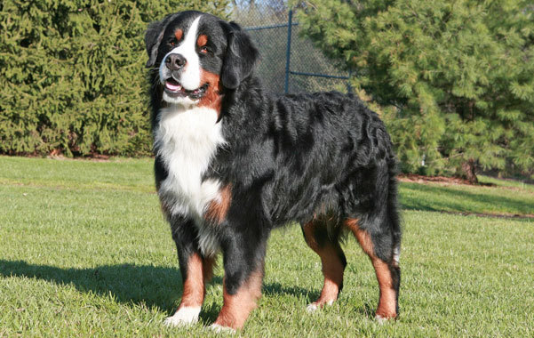

Бернский зенненхунд
- Продолжительность жизни: 6-8 лет
- Группа: Рабочая
- Окрас шерсти: триколор (черно-бело-коричневый или черно-бело-рыжий)
Палевые отметины на бровях морде, лапах.
- Длина шерсти: длинная
- Линька: сильная
- Рост кобеля: 64-70 см
- Рост суки: 58-66 см
Бернский зенненхунд – это одна из старейших, красивейших пород среди рабочей группы, признанная Кеннел клубом.
От других собак он отличается неповторимым изяществом всех линий тела и завидной преданностью к хозяину.
По своей натуре бернский зенненхунд мягок, очень мил, терпелив и предан.
Бернский зенненхунд – обладатель незаурядной внешности: блестящая трехцветная шерсть, приземистое, мускулистое телосложение,
блестящая белая шерсть на груди. В течение целых десятилетий зенненхундов не скрещивали с другими породами собак,
так как они жили в швейцарских Альпах в изоляции от окружающей среды.
От межродственного скрещивания значительно сократилась средняя продолжительность жизни.
Но в мире всё гармонично устроено. И возможно его короткая продолжительность жизни –
плата за высшую степень преданности к хозяину, лояльность и природную красоту.
Бернский зенненхунд чрезвычайно терпелив, однако, будет сильно огорчаться,
если Вы будете регулярно оставлять его ночевать на улице, во дворе. Этой собаке требуется много жизненного пространства,
где она бы могла бегать, прыгать, играть. Сельская местность – это именно то, что подойдет бернскому зенненхунду.
